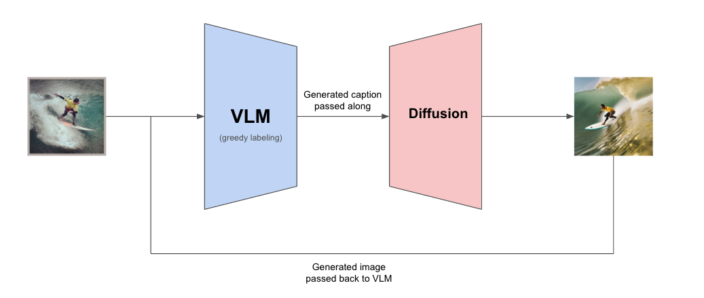

Dean Casey
MS student in Computer Science, Columbia University
I'm an MS student in Computer Science at Columbia, writing my thesis with John Hewitt on activation verbalization methods for language model interpretability. More broadly, I'm interested in communication and studying how information is compressed, transmitted, and distributed between systems with shared mappings, whether those systems are neural networks or people.
Prior to Columbia, I studied economics and data science at the University of Chicago (2024).
Research
Activation verbalization for language model interpretability
Evaluating and improving methods that attempt to translate language model activations directly into natural language. Primarily working on Natural Language Autoencoders.
Information loss dynamics in iterative VLM–diffusion loops
What survives when an image is repeatedly compressed into text and reconstructed? We caption COCO images with a vision-language model (LLaVA), regenerate each image from its caption with Stable Diffusion, and repeat the loop over many iterations, tracking drift in CLIP and sentence-embedding space. Trajectories sometimes fall into semantic attractors, with some (image, caption) pairs converging into stable states. K-means clusters of the embeddings generally tighten from one iteration to the next.

Earlier projects
-
Toy models of superposition 2025
Reproduced Anthropic's toy superposition results, showing how a ReLU nonlinearity aligns representations with the privileged neuron basis. -
Feature visualization in a residual CNN 2024–25
Trained a ResNet on CIFAR-10 and visualized the features it learns, inspired by Chris Olah's Circuits work. -
Political bias in fine-tuned LLMs 2024
Fine-tuned LLMs on FOX and CNN text to measure how easily a model's political slant can be shifted. -
Image compression with SVD 2023
Low-rank approximation of images via singular value decomposition.